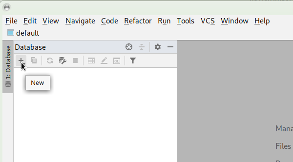
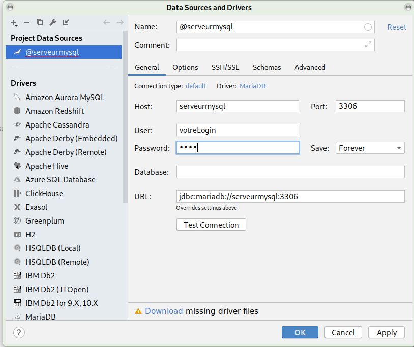
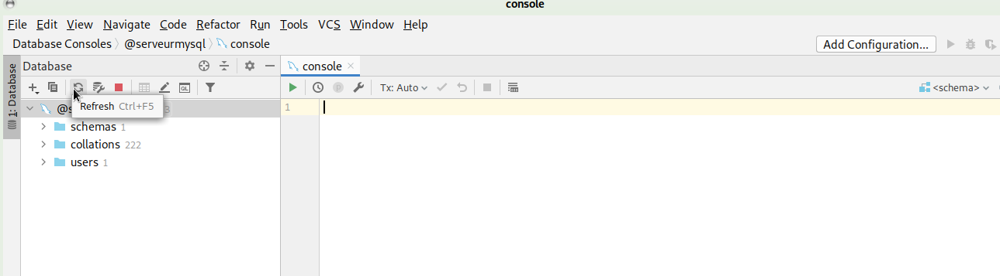
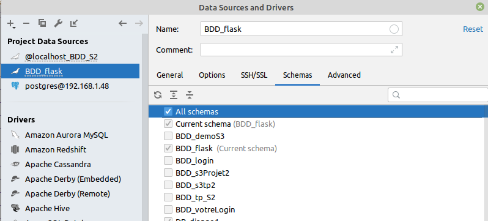

Utiliser MySQL : la machine serveurmysql est un serveur MySQL (Oracle)
base de données par défaut
connexion à la base de données
Sur le menu de droite, créer une connexion
nouvelle connexion
Utiliser MariaDB
type de connexion : mariabd
Configuration de la connexion :
Comme pour vous connecter dans un terminal :
mysql --user=votreLogin --password=votreMotDePasse --host=serveurmysql --database=BDD_votreLogin
Il faut configurer, votre “login”, votre mot de passe (JJMM jour mois de naissance), et le nom de la machine “host” où le SGBDR MySql est installé : serveurmysql (à l’iut, localhost sur votre machine)
paramètre de connexion
Tester la connexion :
Le logiciel installe le driver avant (le plus souvent)
test de la connexion et installation du driver
rafraîchir si besoins
rafraîchir pour afficher le contenu des BDDs : schémas
vous pouvez basculer d’une base de données à l’autre : sélection du schéma
sélection d’une BDD : d’un schéma
la liste des bases de données accessibles depuis une connexion
sélection des schémas (BDD) accessibles depuis une connexion
intérêt de “datagrip”
détection des erreurs dans la structure du code SQL
nom de colonne, table … inconnu dans la base de données
aide pour les fonctions SQL
auto-complétion des fonctions (qui peuvent être parfois différentes d’un SGBDR à l’autre)
détections des erreurs dans Datagrip
problème possible
pb avec configuration “server time zone” avec serverTimeZone et comme valeur par exemple UTC